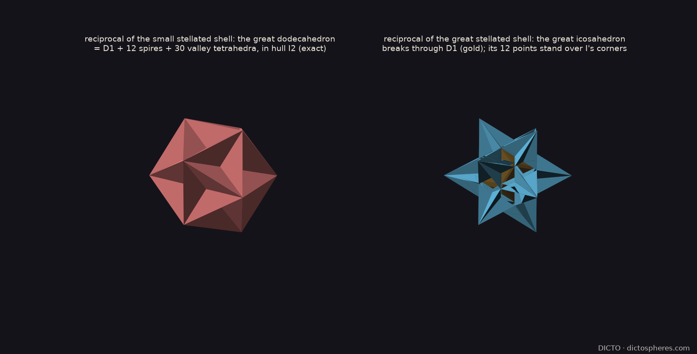
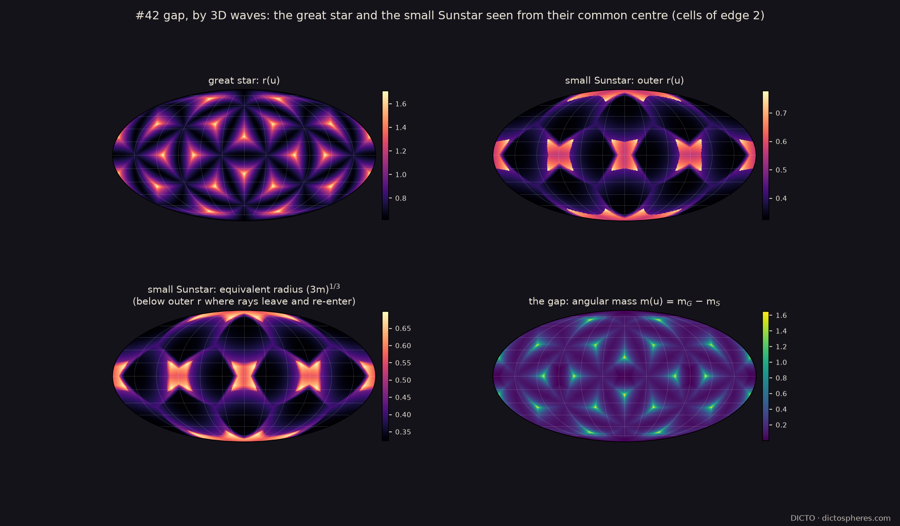
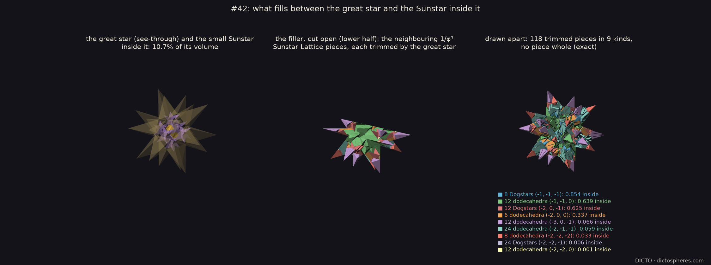
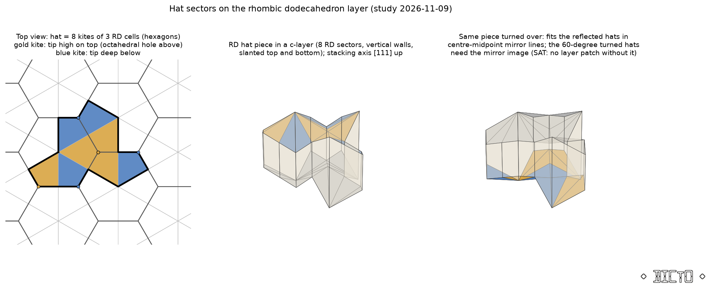

The Kepler–Poinsot–UP cycle grows by shells, each a golden turn (φ³) larger. The small stellated dodecahedron and the great dodecahedron are filled by one and the same pattern: a dodecahedron, its 12 spires and 30 valley tetrahedra. The great icosahedron breaks it: its 12 points stand over the core's corners, not over its faces, and it cuts every cap and spire to a golden fraction (2/φ² and 2/φ³). The reason is that the great stellated dodecahedron's face planes belong to the previous turn's hull, not to the icosahedron. The 6th harmonic decides it in one number per pair of directions: +1 for the same kind of axis, −1 otherwise; the shells that share the pattern all read (+1, +1, +1, +1), the great icosahedron reads (−1, +1, −1, +1).

The gap is 89.3% of the great star (exactly 2668 − 1192√5 for cells of edge 2). It is filled by DICTO's own Sunstar Lattice at 1/φ³ scale: 118 neighbouring dodecahedra and Dogstars in 9 kinds, each trimmed by the great star's 12 planes; all 565 cells in 37 orbits add up to the great star exactly. Why no single solid can do it: the gap has the Sunstar's cube-type (pyritohedral) symmetry, not the icosahedral one, although 99% of its "sound" is icosahedral; the remaining tones (degrees 4, 8, 14) come only from the Sunstar's cube.


The 2023 "hat" is one tile that covers the plane only without repeating, built from 8 kites of the hexagon grid, and it needs some mirrored copies. A close-packed layer of RD cells splits exactly into those kites (each cell's middle section is a regular hexagon, cut into 6 prisms), and turning an RD hat piece over does give a mirrored hat, but only in half of the orientations the hat tiling needs. With the true 3D mirror allowed, the piece fills only the cubic stacking: each layer may be a hat tiling, but the stacking is forced to repeat (ABCABC). A TRD hat piece cannot tile even one layer. So the hat gives aperiodic layers at best, never an aperiodic stacking. The useful lesson: only a piece reaching across two layers can see which way the layer below leaned, which is where DICTO's ABC waveform now goes.
